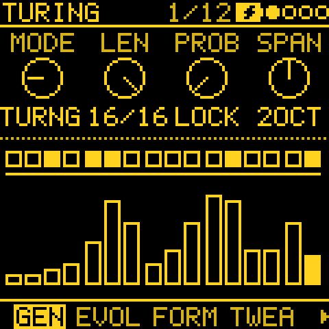
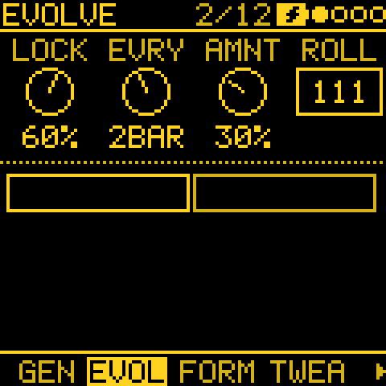
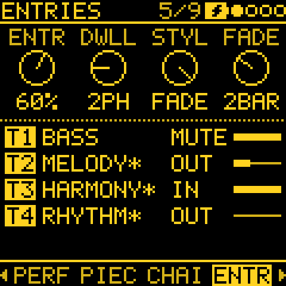
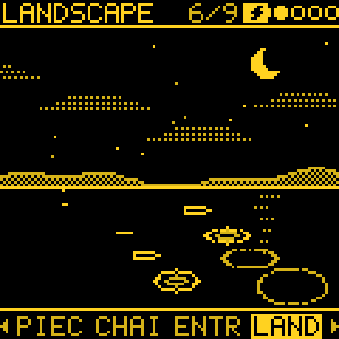
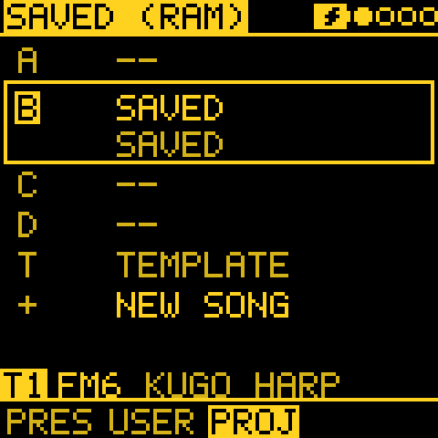

Getting started with Tessera
Your first half hour: from a fresh install to a piece that plays itself, one step at a time. Each step takes a minute or two, and you can stop after any of them. The manual has every detail when you want it.
No FM-1 to hand? The web simulator runs the same firmware in your browser, so you can follow along there.
Three things to know first. ALGORITHM picks the track (1 to 4) on every page. KNOB 1 to 4 are the four knobs from left to right, and each page shows what they do along the top of the screen. A page button (SEQ, ARP, GLO...) opens its first page, and tapping it again steps through the rest.
1. Install
You need the FM-1, a USB cable and Chrome or Edge on a computer.
- Connect the FM-1 directly by USB (not through a hub).
- Open the web installer and follow it. Choose the standard build; the single-core one is for the few FM-1s that crash with it.
- Don't unplug the FM-1 while it is writing.
The installer can also take you back to the official firmware later, with a backup first.
2. Hear it
Power on. Tessera starts with four sounds: KUGO HARP on track 1, KOTO WARM on track 2, FLUTE on track 3 and the 808 KIT on track 4, in the KUMOI scale on E. Play the keys: you hear the selected track.

HOME: the four tracks at a glance. SELECT sets the tempo here.
Try: turn ALGORITHM to each track in turn and play a few notes.
3. Let a generator play
A generator writes the notes for you, always in the project's scale.
- Track 1 (KUGO HARP). Tap SEQ: this is GEN, the page that says what the track plays.
- Turn MODE (KNOB 1) to TURING, then press PLAY. A melody loops.
- Turn PROB to about 20: the loop changes a little each time round. At 0 it holds still.

GEN with MODE on TURING.
Try: track 4 (the 808 KIT), MODE ATLAS, DENS at 50: a drum groove underneath.
4. Find a line you like
Every generator line comes from a seed: a number you can come back to.
- Track 1, tap ARP: this is EVOLVE.
- Turn ROLL (KNOB 4) one click at a time. Each click is a new line; turn back for the last one.
- When you like it, note the number. That line is yours.
- Set EVERY to 4 and AMOUNT to about 30: now the line changes a little every four bars, so it never wears out.

EVOLVE: how often the line changes, how much, and its seed.
Try: tap SEL on track 1 to change the scale. Every generator follows at once.
5. Let it play itself
Three pages turn a loop into a piece that changes over minutes or hours. Each one starts switched off.
- ARP, tap to ENERGY, and turn ARC to about 50: the tracks get sparser and busier in a slow tide.
- GLO, tap to ENTRIES, and turn ENTRIES to about 50: tracks drop out and come back in on the phrase lines, like a band arranging itself.
- GLO, tap to PIECE: 10 minutes, shape ARCH, END STOP. Now it has a beginning, a peak and an end, and stops by itself.


ENTRIES shows which tracks are in and out; PIECE shows the shape of the whole piece.
Try: press PLAY and leave it for ten minutes.
6. Watch it
GLO, tap to LANDSCAPE: a night sea drawn by the music. Notes fall as rain, the moon crosses the sky as the piece goes on. The keys are the mixer's: the black keys mute tracks 1 to 4, C4 brings them all back.

LANDSCAPE while the music plays.
7. Save it
Hold SAVE to save the project. Everything is kept: the sounds, the generators and their seeds, and every page you set.
To start afresh: tap SAVE to the PROJECT page, turn KNOB 1 to New song and press OCT+. Tessera asks for a key, a scale and a tempo, then a role for each track (drums, bass, chords, lead or pad).

PROJECT" width="240">SAVE > PROJECT: your projects, and New song.
Where next
- First steps: you have a loop, what next?: the next six moves, from live mutes to song sections.
- Tessera in plain words: what every page is for, and which generator to reach for.
- RECIPES: drones, chords that lead, pieces that play for hours, driving other synths.
- The cheat sheet: every button and combination on one printable page.
- The manual as a PDF: the whole manual, to print or read offline.
Next: Tessera in plain words, then the whole manual.